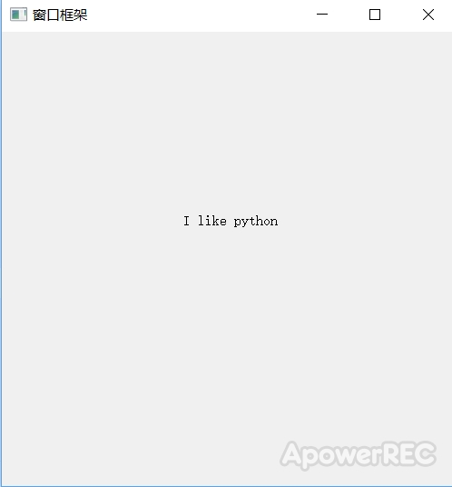
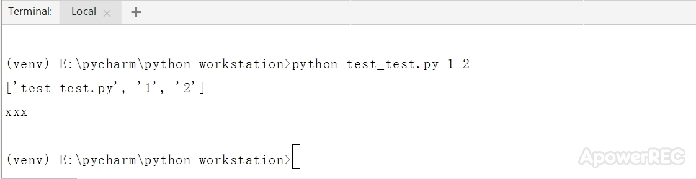

在学习python GUI部分时，一开始看书有点懵，看不懂框架，以下是个人学习所得（参考了别人的视频讲解），错误之处，望大家指教
#0.导入需要的包和模块
from PyQt5.Qt import * #Qt包含常用的包和模块
import sys
#创建应用程序对象，
#sys.argv的作用：我们的代码到时候有两种执行方法，1.右击 执行，2.命令行 python代码的名称
#经过命令行执行这个程序时，通过执行这个脚本所传递的不同参数，来执行不同的逻辑（sys.argv相当于传递参数的介质）
#1.创建一个应用程序对象，当其他文件想要调用app中命令行的参数时，可以通过qApp来调用，应为它是在PyQt5中所定义的全局变量
app=QApplication(sys.argv)
#print(app.arguments())
#print(qApp.arguments())
#2.控件的操作
#创建控件，同时能设置其属性（位置，大小，样式，事件，信号的处理。。。）
#2.1创建控件
window=QWidget()
#2.2设置控件属性
window.setWindowTitle("窗口框架")
window.resize(400,500)
window.move(400,200)
label=QLabel(window)
label.setText("I like python")
label.move(200,200)
#展示控件(创建好一个控件后，若该控件没有父控件，默认情况下不显示，需手动调用show())
window.show()
#3.执行应用程序对象，并进入消息循环
#exit程序退出，正常退出码为0
sys.exit(app.exec_())
运行结果：
关于命令行，在使用pycharm软件，点击下面工具栏中Terminal,在中间输入“python+文件文件的名称+想要传递的参数”from PyQt5.Qt import *
import sys
#经过命令行执行这个程序时，通过执行这个脚本所传递的不同参数，来执行不同的逻辑
args=sys.argv
print(args)
if args[1]=='1':
print("xxx")
else:
print("yyy")